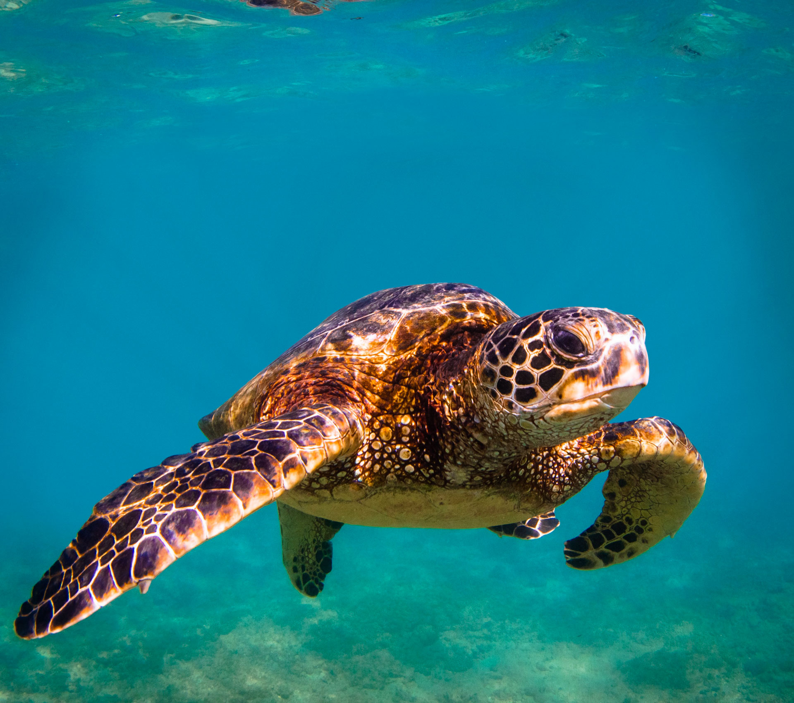

The sunlit zone covers the upper 200 meters where organisms which grow by sunlight dwell. With climates changing, this zone has been darkening and contracting. This creates alterations in the animals' natural habitats, making their ecosystems a less safe and stable environment to live in.
The twilight zone has little light as it is 200-1000 meters deep. Since the seas are warming because of greenhouse gas emissions, there have been fewer organisms living in this zone than before.
The midnight zone spans 1000-4000 meters deep, where the flow of food and oxygen levels have been affected by climate change. “Marine snow” refers to organic waste and dead matter that sinks to this zone from upper layers, which is what organisms feed on here.
The ocean abyss, though around 3000-6000 meters deep, is still affected. The supply of food and changes to currents and temperature have been altered by climate change. This layer also relies on marine snow for energy. De-oxygenation is shifting ecosystems negatively as well.
The ocean trenches, the deepest layer of the ocean, are similar to the abyss. The chemistry of the acidity has been shifting, which affects the trench organisms. Since it is the lowest layer, it is isolated and facing disruptions from habitat disconnection.